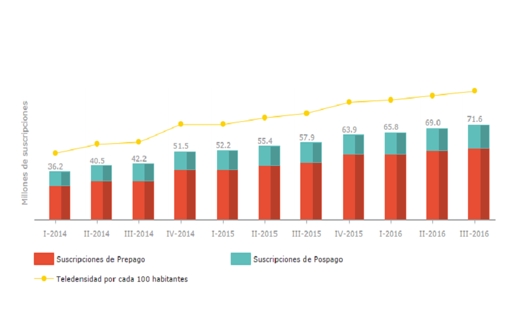
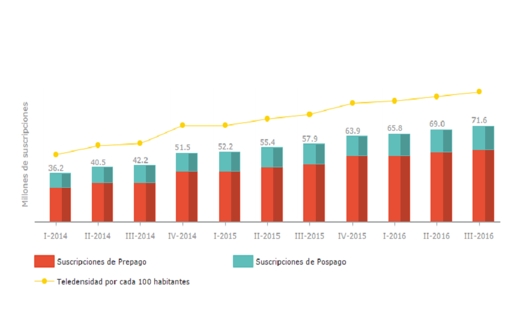
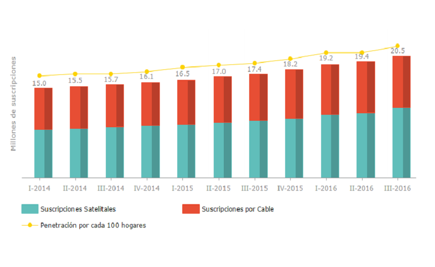
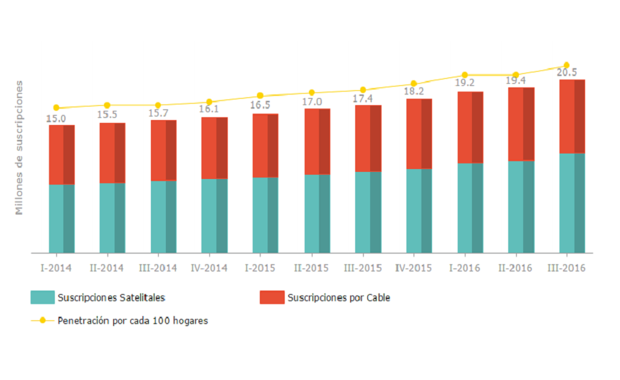

MÉXICO

ESTADÍSTICAS
SUSCRIPTORES DE TELEFONIA FIJA (por cada 100 hogares) SUSCRIPTORES DE BANDA ANCHA MÓVIL (100 habitantes)
 
SUSCRIPTORES DE TELEFONIA MOVIL (100 habitantes) SUSCRIPTORES DE TV DE PAGA (por cada 100 hogares)
 

ENTIDADES REGULADORAS